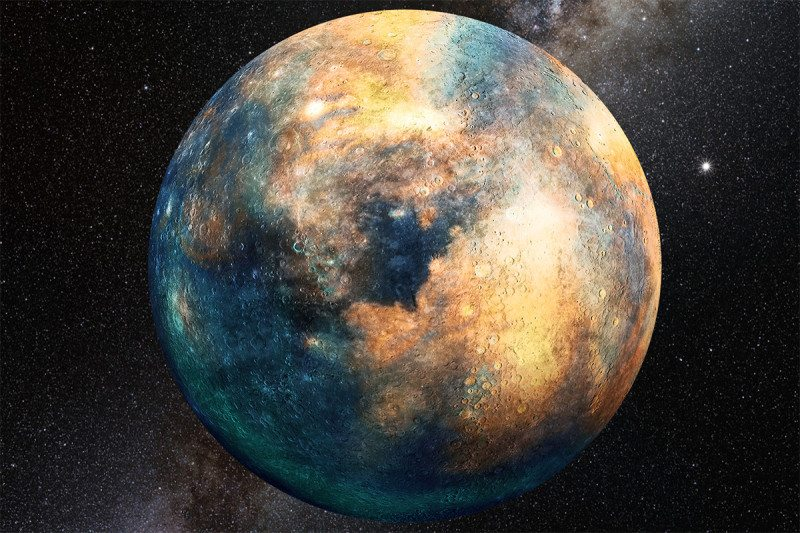
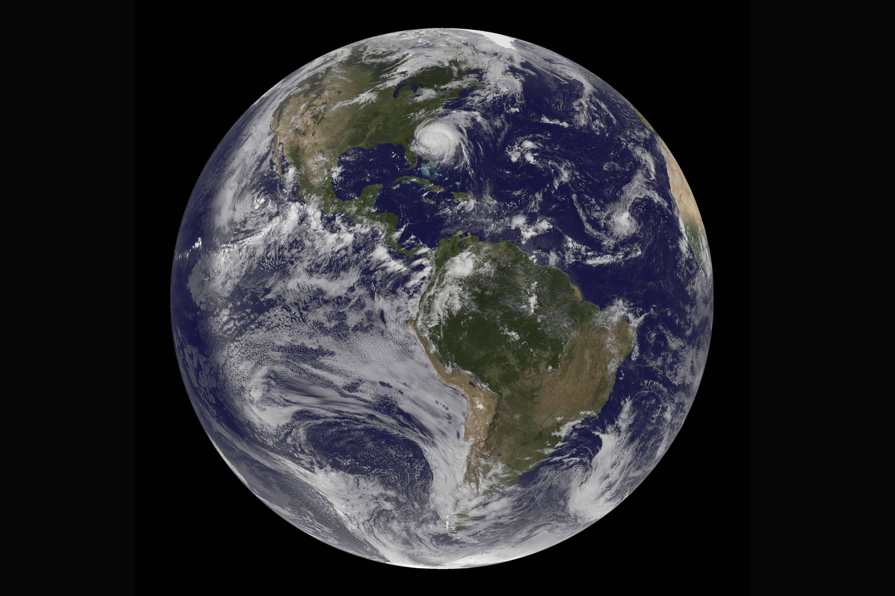
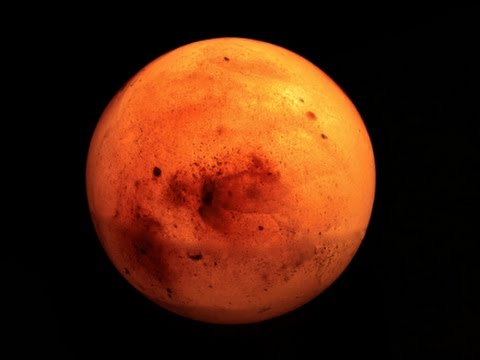
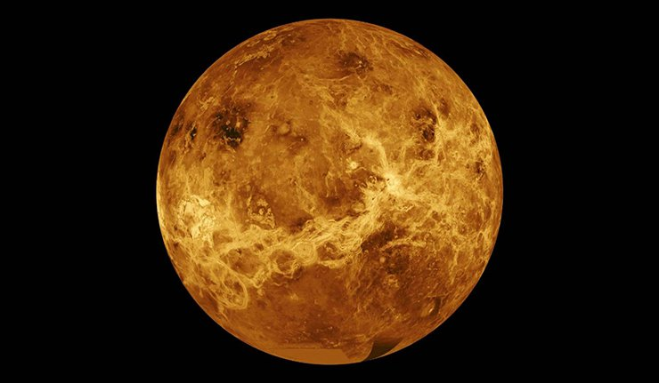
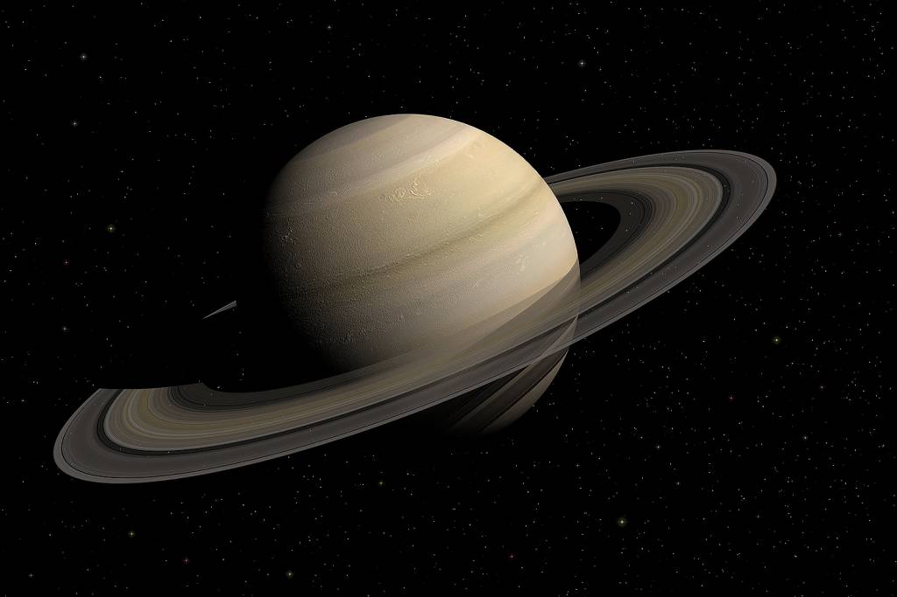
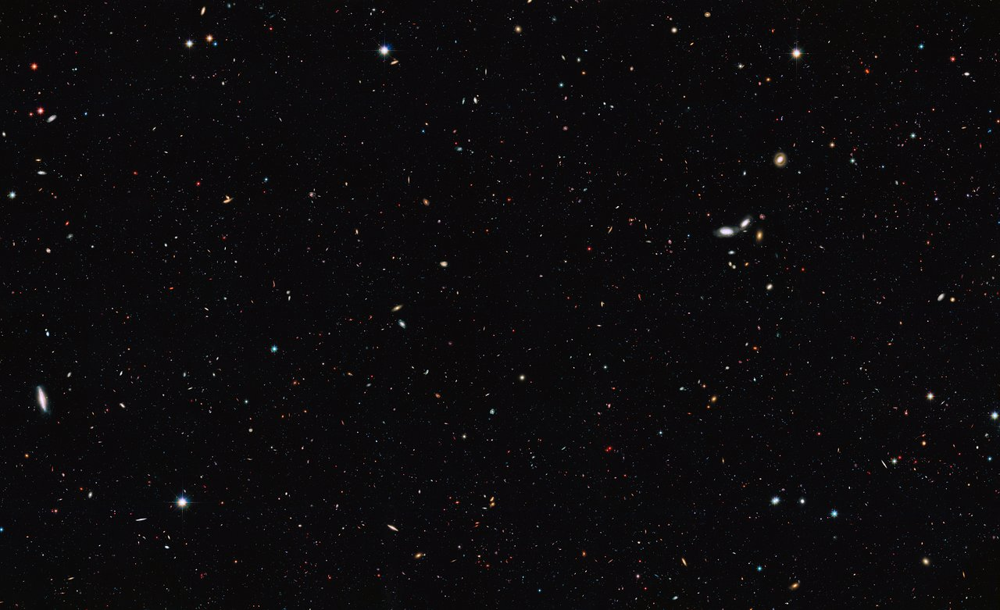

The Universe is all of space and time (spacetime) and its contents, which includes
planets, moons, stars, galaxies, the contents of
intergalactic space and all matter and energy. While the size of the entire Universe is
still unknown, it is possible to measure the observable universe.
The earliest scientific models of the Universe were developed by ancient Greek and
Indianphilosophers and were geocentric, placing Earth at the centre of the
Universe. Over the centuries, more precise astronomical observations led Nicolaus
Copernicus to develop the heliocentric model with the Sun at the centre of the Solar
System. In developing the law of universal gravitation, Sir Isaac Newton built upon
Copernicus's work as well as observations by Tycho Brahe and Johannes Kepler's laws of
planetary motion.
Further observational improvements led to the realization that our Solar System is
located in the Milky Way galaxy, which is one of many galaxies in the Universe. It is
assumed that galaxies are distributed uniformly and the same in all directions, meaning
that the Universe has neither an edge nor a center. Discoveries in the early 20th century
have suggested that the Universe had a beginning and that it is expanding at an
increasing rate. Roughly eighty percent of mass in the Universe appears to exist in
an unknown form called dark matter which cannot be directly observed.
The Big Bang theory is the prevailing cosmological description of the development of
the Universe. Under this theory, space and time emerged together 13.799±0.021 billion
years ago with a fixed amount of energy and matter that has become less dense as the
Universe has expanded. After the initial expansion, the Universe cooled, allowing the
first subatomic particles to form and then simple atoms. Giant clouds later merged
through gravity to form galaxies, stars, and everything else seen today. It is possible
to see objects that are now further away than 13.799 billion light-years because space
itself has expanded. This means that objects which are now 46 billion light years away
can still be seen in their distant past, because at that time they were much closer to us.
There are many competing hypotheses about the ultimate fate of the universe and about
what, if anything, preceded the Big Bang, while other physicists and philosophers refuse
to speculate, doubting that information about prior states will ever be accessible. Some
physicists have suggested various multiverse hypotheses, in which the Universe might be
one among many universes that likewise exist.
PLANETS

A planet is an astronomical body orbiting a star or stellar remnant that:
is massive enough to be rounded by its own gravity
is not massive enough to cause thermonuclear fusion
has cleared its neighbouring region of planetesimals.
The term planet is ancient, with ties to history, astrology, science, mythology, and
religion. Several planets in the Solar System can be seen with the naked eye. These were
regarded by many early cultures as divine, or as emissaries of deities. As scientific
knowledge advanced, human perception of the planets changed, incorporating a number of
disparate objects. In 2006, the International Astronomical Union (IAU) officially adopted a
resolution defining planets within the Solar System. This definition is controversial
because it excludes many objects of planetary mass based on where or what they orbit.
Although eight of the planetary bodies discovered before 1950 remain "planets" under the
modern definition, some celestial bodies, such as Ceres, Pallas, Juno and Vesta (each an
object in the solar asteroid belt), and Pluto (the first trans-Neptunian object
discovered), that were once considered planets by the scientific community, are no longer
viewed as such.
The planets were thought by Ptolemy to orbit Earth in deferent and epicycle motions.
Although the idea that the planets orbited the Sun had been suggested many times, it was
not until the 17th century that this view was supported by evidence from the first
telescopic astronomical observations, performed by Galileo Galilei. At about the same time,
by careful analysis of pre-telescopic observation data collected by Tycho Brahe, Johannes
Kepler found the planets' orbits were not circular but elliptical. As observational tools
improved, astronomers saw that, like Earth, the planets rotated around tilted axes, and
some shared such features as ice caps and seasons. Since the dawn of the Space Age, close
observation by space probes has found that Earth and the other planets share
characteristics such as volcanism, hurricanes, tectonics, and even hydrology.
Planets are generally divided into two main types: large low-density giant planets, and
smaller rocky terrestrials. Under IAU definitions, there are eight planets in the Solar
System. In order of increasing distance from the Sun, they are the four terrestrials,
Mercury, Venus, Earth, and Mars, then the four giant planets, Jupiter, Saturn, Uranus, and
Neptune. Six of the planets are orbited by one or more natural satellites.
Several thousands of planets around other stars ("extrasolar planets" or "exoplanets") have
been discovered in the Milky Way. As of 1 February 2018, 3,728 known extrasolar planets in
2,794 planetary systems (including 622 multiple planetary systems), ranging in size from
just above the size of the Moon to gas giants about twice as large as Jupiter have been
discovered, out of which more than 100 planets are the same size as Earth, nine of which
are at the same relative distance from their star as Earth from the Sun, i.e. in the
habitable zone. On December 20, 2011, the Kepler Space Telescope team reported the
discovery of the first Earth-sized extrasolar planets, Kepler-20e[5] and Kepler-20f,
orbiting a Sun-like star, Kepler-20. A 2012 study, analyzing gravitational microlensing
data, estimates an average of at least 1.6 bound planets for every star in the Milky
Way. Around one in five Sun-like stars is thought to have an Earth-sized planet in its
habitable zone.
Some of the best known planets
Image
Name

Earth

Mars

Mercury

Saturn
Jupiter
STARS

A star is type of astronomical object consisting of a luminous spheroid of plasma held
together by its own gravity. The nearest star to Earth is the Sun. Many other stars are
visible to the naked eye from Earth during the night, appearing as a multitude of fixed
luminous points in the sky due to their immense distance from Earth. Historically, the most
prominent stars were grouped into constellations and asterisms, the brightest of which
gained proper names. Astronomers have assembled star catalogues that identify the known
stars and provide standardized stellar designations. However, most of the stars in the
Universe, including all stars outside our galaxy, the Milky Way, are invisible to the naked
eye from Earth. Indeed, most are invisible from Earth even through the most powerful
telescopes.
For at least a portion of its life, a star shines due to thermonuclear fusion of hydrogen
into helium in its core, releasing energy that traverses the star's interior and then
radiates into outer space. Almost all naturally occurring elements heavier than helium are
created by stellar nucleosynthesis during the star's lifetime, and for some stars by
supernova nucleosynthesis when it explodes. Near the end of its life, a star can also
contain degenerate matter. Astronomers can determine the mass, age, metallicity (chemical
composition), and many other properties of a star by observing its motion through space,
its luminosity, and spectrum respectively. The total mass of a star is the main factor that
determines its evolution and eventual fate. Other characteristics of a star, including
diameter and temperature, change over its life, while the star's environment affects its
rotation and movement. A plot of the temperature of many stars against their luminosities
produces a plot known as a Hertzsprung–Russell diagram (H–R diagram). Plotting a particular
star on that diagram allows the age and evolutionary state of that star to be determined.
A star's life begins with the gravitational collapse of a gaseous nebula of material
composed primarily of hydrogen, along with helium and trace amounts of heavier elements.
When the stellar core is sufficiently dense, hydrogen becomes steadily converted into
helium through nuclear fusion, releasing energy in the process. The remainder of the
star's interior carries energy away from the core through a combination of radiative and
convective heat transfer processes. The star's internal pressure prevents it from
collapsing further under its own gravity. A star with mass greater than 0.4 times the Sun's
will expand to become a red giant when the hydrogen fuel in its core is exhausted. In
some cases, it will fuse heavier elements at the core or in shells around the core. As the
star expands it throws a part of its mass, enriched with those heavier elements, into the
interstellar environment, to be recycled later as new stars. Meanwhile, the core becomes a
stellar remnant: a white dwarf, a neutron star, or if it is sufficiently massive a black
hole.
In modern astronomy, a constellation is a definite area of the celestial sphere, above we see some of them. Constellations look like people and animals. Sagittarius looks like a
teapot. These areas are grouped around asterisms, patterns formed by important stars,
seemingly close to each other in the terrestrial night sky.
There are 88 constellations recognized by the International Astronomical Union (IAU) since
1922. Most of them are included in the 48 constellations defined by Ptolemy in his Almagest
in the second century; others were defined in the seventeenth and eighteenth centuries, the
most recent being found in the southern sky, defined by Nicolas Louis de Lacaille in Coelum
australe stelliferum (1763).
ABOUT ME
My full name is Thiago Yuri Evaristo de Souza, a graduate student in the course of Computer Science at the Federal University of Campina Grande (UFCG) and I really dream about working in the IT field!